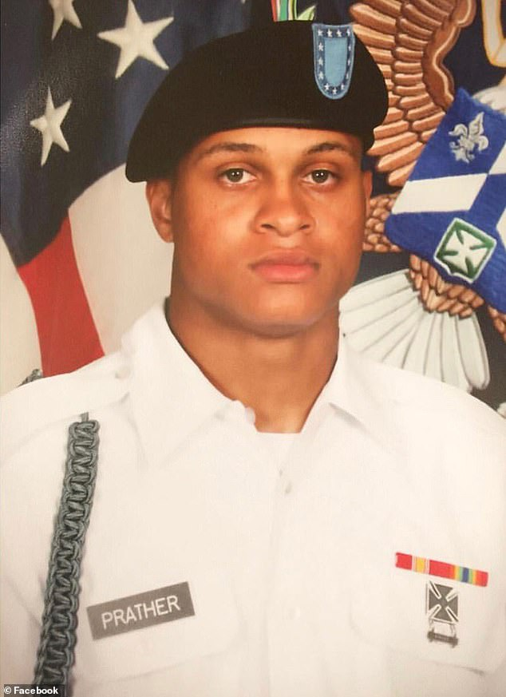

He is survived by his wife, Janelle Sonja Prather his beloved parents Shavon Prather and Khari Williams; his step daughter Amaya Brown; his brothers Kuran Prather, Nikko Prather, Khamari Williams, and Maleek Young; his sister Ashlynn Williams. He is also survived by a host of loving relatives and friends.
Our beloved Javon Prather was a Specialist of the Maryland National Guard, B Co., 1st Battalion, 175th Infantry Regiment. He was tragically taken from us at the age of 24 on Tuesday, March 3, 2020 in Springfield, Virginia.
Learn more Javon Malik Prather